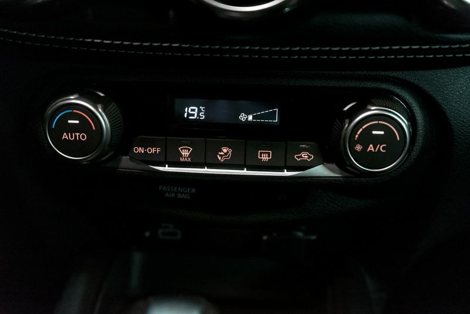
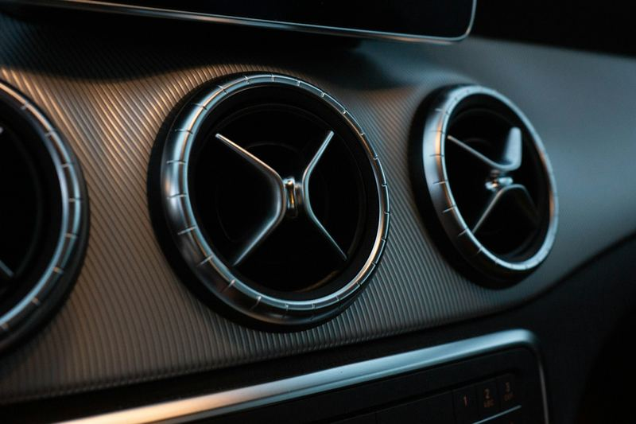
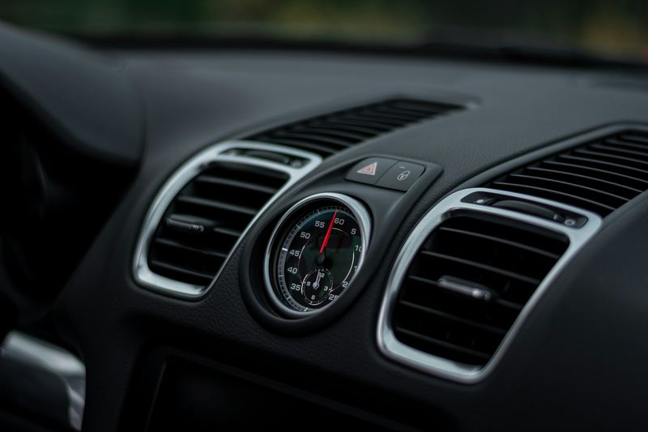
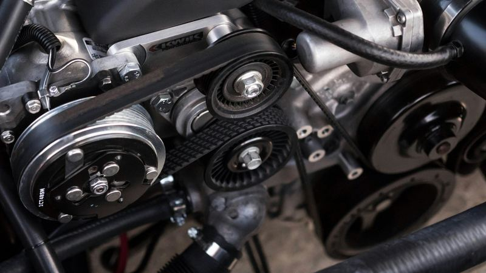

Plnění a kontrola těsnosti
Odsajeme staré chladivo, zkontrolujeme těsnost okruhu, doplníme chladivo a olej. R134a i R1234yf.
Autoklima FM ve Frýdku-Místku. Servis, opravy a plnění klimatizací osobních aut a dodávek, chladivo R134a i R1234yf. Ozónová dezinfekce a výměna filtrů.

Starší auta jezdí na R134a, nová na R1234yf. Zadejte rok výroby a řekneme, které nejspíš máte. Jistotu dá štítek pod kapotou.

Odsajeme staré chladivo, zkontrolujeme těsnost okruhu, doplníme chladivo a olej. R134a i R1234yf.

Když z výdechů táhne zatuchlina. Ozón vyčistí výparník i potrubí.

Opravy úniků, výměny filtrů a náplní. Osobní auta i dodávky.
„Přístup, cena, kvalita a především rychlost opravy na špičkové úrovni.“
zákazník na Firmy.cz